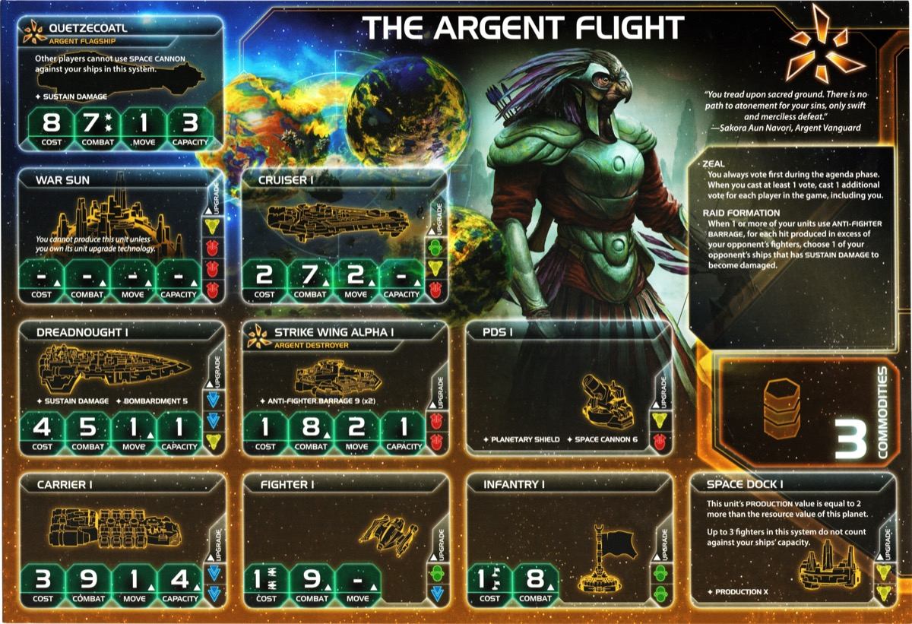

Argent Flight is one of the most explosive combat factions in TI4. This faction excels at obliterating fighter screens with devastating ANTI-FIGHTER BARRAGE, spamming cheap destroyers for early aggression, and blasting enemies with PDS networks. Argent Flight isn’t subtle—it’s about destroying your opponents’ fleets efficiently and controlling space through superior firepower.
Watch opponents realize their fighters are target practice for your Raid Formation, capital ships get shredded by excess AFB hits, and entire systems get denied by PDS coverage. When your destroyers arrive, space combat becomes a massacre.
Playing Argent Flight is like commanding a swarm of angry space hornets with laser turrets. Your cheap Strike Wing Alpha destroyers swarm the map early, your ANTI-FIGHTER BARRAGE shreds through fighter screens AND damages capital ships via Raid Formation, and your PDS networks deny movement and blast approaching fleets before combat even starts.
The key strength of Argent Flight is cost-efficient destruction. Spam cheap destroyers with brutal AFB, leverage your Commander for extra dice on unit abilities (AFB, SPACE CANNON, BOMBARDMENT), and force opponents to either avoid you or bring expensive capital ships. You win through volume of fire and efficiency.
Opponents will respect your firepower early. That moment when your 2 destroyers delete an entire fighter screen and damage a dreadnought with excess AFB hits? Utterly satisfying.
Home System:
Commodities: 3
Notes: Three planets in your home system is fantastic for early expansion and objectives. The optimal count (2.5/2.5) means you have flexibility—Avar’s balanced 1/1 can be spent as either resources or influence depending on what you need.
Defense Issue: 3-planet home systems are harder to defend late game—you need to spread ground forces across 3 planets instead of 1-2, making it easier for opponents to invade. You’ll need to rely on PDS networks and Aerie Hololattice (blocks movement through systems with your structures) to keep your home system safe.
Notes: One of the best starting fleets in the game. Your 2 destroyers each have capacity 1, and you have 5 infantry—this lets you send each destroyer 2 systems away from your home system to claim planets independently. You can take 2 systems that are 2-move away on R1, giving you incredible expansion reach. This makes it nearly impossible to find an unplayable slice for Argent—you can reach almost any planet configuration.
Strike Wing Alpha I (Destroyer): Cost: 1 | Combat: 8 | Move: 2 | Capacity: 1 | ANTI-FIGHTER BARRAGE 9 (x2)
Your bread and butter. Cheap destroyers with AFB and capacity for transporting infantry. Mass produce these early game.
Zeal (Faction Ability): You always vote first during the agenda phase. When you cast at least 1 vote, cast 1 additional vote for each player in the game, including you.
Strong voting power with a downside. In a 6-player game, casting 1 vote becomes 7 votes total (1 + 6 bonus). However, voting first means you commit your votes before seeing what others do—you can’t kingmake or react. You’re forced to vote your interest, then others decide if they want to pile on or counter you. Trade your votes for favors when you don’t care about the outcome.
Raid Formation (Faction Ability): When 1 or more of your units use ANTI-FIGHTER BARRAGE, for each hit produced in excess of your opponent’s fighters, choose 1 of your opponent’s ships that has Sustain Damage to become damaged.
This makes your ANTI-FIGHTER BARRAGE terrifying. After destroying all fighters, excess hits go straight to capital ships with Sustain Damage. Fighter screens become a liability against you.
Starting Technologies:
Choose TWO of the following:
Recommended: Sarween
Tools + Plasma Scoring - This is
the only reasonable choice. Gives you flexibility and enables easy
expansion. Sarween provides economy and leads to Aerie
Hololattice
 if
going structure path. Plasma Scoring leads to
Strike Wing Alpha II
if
going structure path. Plasma Scoring leads to
Strike Wing Alpha II

 .
Neural Motivator is bait—green doesn’t lead to
any techs Argent actually wants.
.
Neural Motivator is bait—green doesn’t lead to
any techs Argent actually wants.
Faction Technologies:
You typically acquire both faction technologies during the game.
Strike Wing Alpha II

 :
Cost: 1 | Combat: 7 | Move: 2 | Capacity: 1 | ANTI-FIGHTER BARRAGE 6
(x3)
:
Cost: 1 | Combat: 7 | Move: 2 | Capacity: 1 | ANTI-FIGHTER BARRAGE 6
(x3)
When this unit uses ANTI-FIGHTER BARRAGE, each result of 9 or 10 also destroys 1 of your opponent’s infantry in the space area of the active system.
Aerie Hololattice
 :
Other players cannot move ships through systems that contain your
structures. Each planet that contains 1 or more of your structures gains
the PRODUCTION: 1 ability as if it were a unit.
:
Other players cannot move ships through systems that contain your
structures. Each planet that contains 1 or more of your structures gains
the PRODUCTION: 1 ability as if it were a unit.
Agent - Trilossa Aun Mirik: When a player produces ground forces in a system: You may exhaust this card; that player may place those units on any planets they control in that system and any adjacent systems.
Useful for helping players with flexible ground force placement. Trade incentive or favor generator.
Commander - Trrakan Aun Zulok: Unlock: Have 6 units that have ANTI-FIGHTER BARRAGE, SPACE CANNON, or BOMBARDMENT on the game board.
When 1 or more of your units make a roll for a unit ability: You may choose 1 of those units to roll 1 additional die.
Easy to unlock with destroyers and PDS. Significantly boosts your ANTI-FIGHTER BARRAGE, SPACE CANNON, and BOMBARDMENT effectiveness. Aim to unlock Round 2-3 (R2-R3).
Hero - Mirik Aun Sissiri: Unlock: Have 3 scored objectives. Helix Protocol - ACTION: Move any number of your ships from any systems to any number of other systems that contain 1 of your command tokens and no other players’ ships. Then, purge this card.
Massive repositioning tool. Use for surprise attacks, defensive regrouping, or scoring movement objectives. Save for a critical moment—usually Round 4-5 (R4-R5) when positioning matters most for victory.
When 1 or more of your units make a roll for a unit ability: Choose 1 of those units to roll 1 additional die. Then, return this card to the Argent player.
Useful for ANTI-FIGHTER BARRAGE, SPACE CANNON, or BOMBARDMENT users. Trade value: Max 1 TG. Sell this at every possible opportunity—trade it to the active player during their turn so it gets used and returned to you, rather than sitting unused in someone’s hand.
Alliance Ability: While the Argent Flight player’s commander is unlocked: When 1 or more of your units make a roll for a unit ability, you may choose 1 of those units to roll 1 additional die.
Excellent alliance for factions with ANTI-FIGHTER BARRAGE, SPACE CANNON, or BOMBARDMENT abilities. Particularly valuable for PDS-heavy factions (Titans of Ul, Muaat, etc.) who can get extra SPACE CANNON dice. Trade value: 3-4 TG.
Cost: 2 | Combat: 6 | Sustain Damage
This unit does not count against capacity if it is being transported or if it is in a space area with 1 or more of your ships that have capacity values.
Free capacity mechs are excellent for invasions. Pair with your destroyer capacity to transport mechs without using carrier space. Very efficient for landing invasions.
Cost: 8 | Combat: 7 (x2) | Move: 1 | Capacity: 3 | Sustain Damage
Other players cannot use SPACE CANNON against your ships in this system.
Solid flagship. SPACE CANNON immunity is situationally strong. Useful for assaulting heavily fortified systems with PDS networks without taking pre-combat damage.
Note: Coolest flagship name in the game.
When you activate a system that contains only your units, you may place command tokens from your reinforcements into any systems adjacent to that system that contain only your units; at the end of this action, you may move ships among the active system and systems adjacent to it that contain your command tokens.
B↔︎Y Synergy: Blue and yellow technologies count as
each other for prerequisites. This opens up tech flexibility—Sarween Tools
 can
count as blue, Gravity Drive
can
count as blue, Gravity Drive
 can
count as yellow, etc.
can
count as yellow, etc.
Note: The breakthrough ability itself is pretty bad (requires only your units in systems, awkward activation). You get this primarily for the B↔︎Y tech synergy to open up blue tech options.
Argent Flight is incredibly flexible and can thrive in any speaker position. Your priority is getting a high-value slice:
Speaker Order:
Slice Priorities:
Slice Features (Preferred):
Summary: Argent is one of the most flexible factions in draft. You can adapt to any slice quality and any speaker position. Focus on grabbing the highest total value slice (planets + resources + influence combined) rather than worrying about specific features. Your strong starting fleet and flexible tech path let you work with almost anything.
Your Round 1 (R1) priority order: Scoring > Tech > Production > Breakthrough
Argent needs a quick start to capitalize on their strong early game. Focus on:
Scoring - Expand to score your R1 Stage I objective while you’re strong. Use your early power to get points on the board.
Tech - Get on your tech path early
Production - Build units to solidify your position
Breakthrough - Secure Wing Transfer if going that route
Expansion Notes: You have 2 destroyers (capacity 1 each), 1 carrier (capacity 4), and 5 infantry. This gives you incredible expansion flexibility—you can send each destroyer independently to grab 2 systems 2-move away, and use your carrier for a 3rd system. Aim for 3-4 systems R1. Consider nabbing an equidistant planet if your neighbor is a trade-minded faction who won’t contest it aggressively.
You have 3 home planets which helps with objectives and gives you an extra command token R1 (one planet provides the token). Only 3 resources base means you need to expand to fuel production.
Strategy Token Priority: If you have extra strategy tokens, prioritize: Tech, Diplomacy, Construction/Warfare
Argent can struggle in late game for two reasons:
Big capital ship fleets - Opponents building dreadnoughts and war suns reduces the value of your AFB advantage
Lack of transport capacity - Relying on destroyers with capacity 1 makes it hard to move large armies and mechs around the board late game
You’ll need to transition to carriers and heavier ships for capacity, or lean on structure lockdown strategy with Aerie Hololattice.
You start with TWO technologies of your choice from
Neural Motivator
 , Sarween Tools
, Sarween Tools
 , or
Plasma Scoring
, or
Plasma Scoring
 .
.
Recommended R1 Tech Choices:
Your main tech path focuses on Strike Wing Alpha
II

 for destroyer dominance. Deviations available for structure setup if
needed.
for destroyer dominance. Deviations available for structure setup if
needed.
Starting Tech Choices: Sarween
Tools
 +
Plasma Scoring
+
Plasma Scoring

Assumptions: You’ve obtained Wing Transfer breakthrough (B↔︎Y synergy) through expedition tokens or Thunder’s Edge. This makes blue and yellow technologies count as each other for prerequisites.
Round 1: Magen Defense Grid
 - At the start of ground combat on a planet that contains 1 or more of
your structures, you may produce 1 hit and assign it to 1 of your
opponent’s ground forces. (Ω) When any player activates a system that
contains 1 or more of your structures, place 1 infantry from your
reinforcements with each of those structures. - Why:
Free infantry on your structure planets when activated, AND free hit in
ground combat. Excellent defensive tech. Easy to get with Plasma Scoring prerequisite. -
Prerequisites: 1 red (Plasma
Scoring)
- At the start of ground combat on a planet that contains 1 or more of
your structures, you may produce 1 hit and assign it to 1 of your
opponent’s ground forces. (Ω) When any player activates a system that
contains 1 or more of your structures, place 1 infantry from your
reinforcements with each of those structures. - Why:
Free infantry on your structure planets when activated, AND free hit in
ground combat. Excellent defensive tech. Easy to get with Plasma Scoring prerequisite. -
Prerequisites: 1 red (Plasma
Scoring)
Round 2: Aerie Hololattice
 - CAN
DOUBLE TECH - Other players cannot move ships through systems
that contain your structures. Each planet that contains 1 or more of
your structures gains the PRODUCTION: 1 ability as if it were a unit. -
Why: Blocks enemy movement through your systems (insane
lockdown), AND makes every structure planet produce units without
needing a space dock. Game-changing for board control. -
Prerequisites: 1 yellow (Sarween
Tools) - Note: If you have good economy,
consider double teching this round to get ahead on tech path.
- CAN
DOUBLE TECH - Other players cannot move ships through systems
that contain your structures. Each planet that contains 1 or more of
your structures gains the PRODUCTION: 1 ability as if it were a unit. -
Why: Blocks enemy movement through your systems (insane
lockdown), AND makes every structure planet produce units without
needing a space dock. Game-changing for board control. -
Prerequisites: 1 yellow (Sarween
Tools) - Note: If you have good economy,
consider double teching this round to get ahead on tech path.
Round 3: Strike Wing Alpha II

 - CAN DOUBLE TECH - Cost: 1 | Combat: 7 | Move: 2 | Capacity: 1
| ANTI-FIGHTER BARRAGE 6 (x3) - When this unit uses ANTI-FIGHTER
BARRAGE, each result of 9 or 10 also destroys 1 of your opponent’s
infantry in the space area of the active system. - Why:
This is your power spike. Better AFB (6 instead of 9), 3 dice instead of
2, AND kills infantry in space with 9-10 rolls. Devastating destroyer
upgrade that defines your combat superiority. -
Prerequisites: 2 red (Plasma
Scoring + Magen Defense Grid) -
Note: Try to trade/exchange for Wing Transfer
breakthrough this round if you haven’t obtained it yet through
exploration. You’ll need it for Round 4. Can double tech this round if
economy permits.
- CAN DOUBLE TECH - Cost: 1 | Combat: 7 | Move: 2 | Capacity: 1
| ANTI-FIGHTER BARRAGE 6 (x3) - When this unit uses ANTI-FIGHTER
BARRAGE, each result of 9 or 10 also destroys 1 of your opponent’s
infantry in the space area of the active system. - Why:
This is your power spike. Better AFB (6 instead of 9), 3 dice instead of
2, AND kills infantry in space with 9-10 rolls. Devastating destroyer
upgrade that defines your combat superiority. -
Prerequisites: 2 red (Plasma
Scoring + Magen Defense Grid) -
Note: Try to trade/exchange for Wing Transfer
breakthrough this round if you haven’t obtained it yet through
exploration. You’ll need it for Round 4. Can double tech this round if
economy permits.
Round 4: DOUBLE TECH ROUND
With Wing Transfer Breakthrough:
Without Wing Transfer Breakthrough (or with blue skip):
Round 5: Carrier II (BB) - Cost: 3 | Combat: 9 | Move: 2 | Capacity: 6 - Why: Solves late game capacity issues. Move 6 ground forces at speed 2. Essential for large invasions since destroyers only have capacity 1. - Prerequisites: 2 blue (Sarween + Gravity Drive with B↔︎Y synergy, OR Antimass/DET + Gravity Drive)
Flex Techs (as needed): Lightwave Deflector, Fleet Logistics - good options based on objectives
Tech Path Summary:
With Wing Transfer Breakthrough: 1. Magen Defense Grid
 -
Defense + free infantry 2. Aerie Hololattice
-
Defense + free infantry 2. Aerie Hololattice
 -
Structure lockdown + production 3. Strike Wing Alpha
II
-
Structure lockdown + production 3. Strike Wing Alpha
II

 - Destroyer power spike 4. Gravity Drive
- Destroyer power spike 4. Gravity Drive
 + PDS
II (RY) - Mobility + SPACE CANNON spam (double tech) 5. Carrier II (BB)
- Capacity
+ PDS
II (RY) - Mobility + SPACE CANNON spam (double tech) 5. Carrier II (BB)
- Capacity
Without Wing Transfer Breakthrough: 1. Magen Defense Grid
 -
Defense + free infantry 2. Aerie Hololattice
-
Defense + free infantry 2. Aerie Hololattice
 -
Structure lockdown + production 3. Strike Wing Alpha
II
-
Structure lockdown + production 3. Strike Wing Alpha
II

 - Destroyer power spike 4. Antimass
Deflectors/Dark Energy Tap
- Destroyer power spike 4. Antimass
Deflectors/Dark Energy Tap
 +
Gravity Drive
+
Gravity Drive
 -
Join blue tech path (double tech, skip PDS II) 5. Carrier II (BB) -
Capacity
-
Join blue tech path (double tech, skip PDS II) 5. Carrier II (BB) -
Capacity
Key Notes:
Scanlink Drone Network (0):
Love:
Like:
Situational:
Hate:
Your ideal fleet composition in each system:
This composition gives you strong ANTI-FIGHTER BARRAGE, affordable production, and invasion capability. The mech’s free capacity makes destroyer-based invasions viable without needing lots of carrier capacity.
Argent Flight is an excellent “get in, get out” custodian faction. You can easily afford the 6 influence to claim Mecatol Rex Round 2-3 (R2-R3)—your home system provides 3 influence, your destroyers cost only 1 resource (leaving influence available for MR), and you’ll have expanded to influence-heavy planets by then. Take MR early, grab the Custodians token for a free 1 VP, then evaluate whether holding it is worth the commitment. Your ANTI-FIGHTER BARRAGE and Raid Formation make you dangerous enough that opponents might not immediately contest MR, giving you breathing room. If going the Aerie Hololattice route, you can lock down MR with structure placement on adjacent planets and PDS networks—but be realistic: if you abandon MR, you probably won’t see it again. Once you leave, another faction will take it and likely hold it for the rest of the game. The key insight: don’t feel obligated to hold MR forever, but understand that walking away means giving it up permanently. Evaluate whether the custodians point is worth the eventual loss of MR access.
Strengths: Argent Flight excels at combat-oriented objectives and can easily score fleet composition goals with cheap destroyer spam. Structure objectives are achievable when going the Aerie Hololattice path, and strong voting power helps with political objectives.
Weaknesses: Planet control objectives can be challenging since you prioritize mobile fleets over territorial expansion. Late game capacity limitations from destroyer-focused fleets make large-scale invasions difficult without transitioning to carriers.
| Stage I Objective | Status |
|---|---|
| Spendies | |
| Erect a Monument (Spend 8 resources) | 🟡 |
| Sway the Council (Spend 8 influence) | 🟡 |
| Negotiate Trade Routes (Spend 5 trade goods) | 🟡 |
| Lead from the Front (Spend 3 tokens from tactic/strategy pools) | 🟡 |
| Amass Wealth (Spend 3 influence, 3 resources, 3 trade goods) | 🟡 |
| Control | |
| Expand Borders (Control 6 planets in non-home systems) | 🟢 |
| Corner the Market (Control 4 planets with same trait) | 🔴 |
| Found Research Outposts (Control 3 tech specialty planets) | 🔴 |
| Discover Lost Outposts (Control 2 planets with attachments) | 🔴 |
| Push Boundaries (Control more planets than each neighbor) | 🟢 |
| Ships in Systems | |
| Intimidate the Council (Ships in 2 systems adjacent to MR) | 🟢 |
| Explore Deep Space (Units in 3 systems without planets) | 🟢 |
| Make History (Units in 2 legendary/MR/anomaly systems) | 🟢 |
| Populate the Outer Rim (Units in 3 edge systems not HS) | 🟢 |
| Raise a Fleet (5+ non-fighter ships in 1 system) | 🟢 |
| Engineer a Marvel (Have flagship or war sun) | 🟢 |
| Tech | |
| Diversify Research (Own 2 techs in each of 2 colors) | 🟡 |
| Develop Weaponry (Own 2 unit upgrade technologies) | 🟢 |
| Structure | |
| Build Defenses (Have 4+ structures) | 🟢 |
| Improve Infrastructure (Structures on 3 planets outside HS) | 🟢 |
Legend: 🟢 Likely | 🟡 Possible | 🔴 Difficult
| Secret Objective | Status |
|---|---|
| Combat | |
| Unveil Flagship (Win space combat with flagship) | 🟢 |
| Destroy their Greatest Ship (Destroy war sun/flagship) | 🟢 |
| Spark a Rebellion (Win combat vs most VP player) | 🟢 |
| Betray a Friend (Win combat vs player whose PN you have) | 🟢 |
| Brave the Void (Win combat in anomaly) | 🟢 |
| Darken the Skies (Win combat in another player’s HS) | 🟢 |
| Demonstrate your Power (3+ non-fighter ships after combat) | 🟢 |
| Turn their Fleets to Dust (SPACE CANNON destroy last ship) | 🟡 |
| Make an Example of their World (BOMBARDMENT destroy last GF) | 🔴 |
| Fight With Precision (AFB destroy last fighter) | 🟢 |
| Ships in Systems | |
| Threaten Enemies (Ships adjacent to another player’s HS) | 🟢 |
| Cut Supply Lines (Ships in system with another’s space dock) | 🟢 |
| Defy Space and Time (Units in wormhole nexus) | 🟡 |
| Become the Gatekeeper (Ships at alpha and beta wormholes) | 🟡 |
| Learn the Secrets of the Cosmos (Ships in 3 anomaly-adjacent) | 🟢 |
| Control the Region (Ships in 6 systems) | 🟢 |
| Occupy the Seat of the Empire (Control MR with 3+ ships) | 🟢 |
| Control | |
| Monopolize Production (Control 4 industrial planets) | 🔴 |
| Mine Rare Minerals (Control 4 hazardous planets) | 🔴 |
| Forge an Alliance (Control 4 cultural planets) | 🔴 |
| Establish Hegemony (Control planets with 12+ influence) | 🟡 |
| Hoard Raw Materials (Planets with 12+ combined resources) | 🟢 |
| Seize an Icon (Control legendary planet) | 🟢 |
| Stake Your Claim (Control planet in system with another’s) | 🟡 |
| Become a Martyr (Lose control of planet in HS) | 🟡 |
| Tech | |
| Adapt New Strategies (Own 2 faction technologies) | 🟢 |
| Master the Laws of Physics (Own 4 techs of same color) | 🔴 |
| Structure/Units | |
| Establish a Perimeter (Have 4 PDS units) | 🟢 |
| Fuel the War Machine (Have 3 space docks) | 🟡 |
| Gather a Mighty Fleet (Have 5 dreadnoughts) | 🔴 |
| Mechanize the Military (1 mech on each of 4 planets) | 🟡 |
| Occupy the Fringe (9+ GF on planet without space dock) | 🟡 |
| Produce en Masse (Units with 8+ PRODUCTION in 1 system) | 🟡 |
| Other | |
| Dictate Policy (3+ laws in play) | 🟢 |
| Drive the Debate (You or your planet elected by agenda) | 🟢 |
| Destroy Heretical Works (Purge 2 relic fragments) | 🔴 |
| Form a Spy Network (Discard 5 action cards) | 🟡 |
| Foster Cohesion (Be neighbors with all players) | 🟡 |
| Strengthen Bonds (Have another player’s PN) | 🟢 |
| Prove Endurance (Last to pass) | 🔴 |
Legend: 🟢 Likely | 🟡 Possible | 🔴 Difficult
| Stage II Objective | Status |
|---|---|
| Spendies | |
| Centralize Galactic Trade (Spend 10 trade goods) | 🟡 |
| Found a Golden Age (Spend 16 resources) | 🟡 |
| Galvanize the People (Spend 6 tokens from tactic/strategy pools) | 🟡 |
| Manipulate Galactic Law (Spend 16 influence) | 🟡 |
| Hold Vast Reserves (Spend 6 influence, 6 resources, 6 trade goods) | 🟡 |
| Control | |
| Conquer the Weak (Control 1 planet in another player’s HS) | 🟡 |
| Rule Distant Lands (Control 2 planets in/adjacent to different players’ HS) | 🟡 |
| Subdue the Galaxy (Control 11 planets in non-home systems) | 🔴 |
| Unify the Colonies (Control 6 planets with same trait) | 🔴 |
| Reclaim Ancient Monuments (Control 3 planets with attachments) | 🔴 |
| Form Galactic Brain Trust (Control 5 planets with tech specialties) | 🔴 |
| Ships in Systems | |
| Command an Armada (Have 8+ non-fighter ships in 1 system) | 🟢 |
| Achieve Supremacy (Flagship/War Sun in another player’s HS or MR) | 🟡 |
| Become a Legend (Units in 4 systems with legendary/MR/anomalies) | 🟡 |
| Patrol Vast Territories (Units in 5 systems without planets) | 🟡 |
| Control the Borderlands (Units in 5 edge systems not HS) | 🟡 |
| Tech | |
| Master of Sciences (Own 2 techs in each of 4 colors) | 🔴 |
| Revolutionize Warfare (Own 3 unit upgrade technologies) | 🟡 |
| Structure | |
| Construct Massive Cities (Have 7+ structures) | 🟡 |
| Protect the Border (Structures on 5 planets outside HS) | 🟡 |
Legend: 🟢 Likely | 🟡 Possible | 🔴 Difficult
Trading for other factions’ Alliance promissory notes (which give you access to their Commanders) can significantly boost your strategy. Here are the top alliances to prioritize:
Super Top Tier:
Really Useful:
This section highlights action cards that synergize particularly well with your faction’s strengths or mitigate your weaknesses, relics that offer exceptional value for your faction’s strategy and abilities, and agendas to pursue that benefit your position, and agendas to watch out for that could hurt you.
Argent Flight is a powerhouse combat faction with flexible builds. Your job is to:
Don’t let anyone underestimate your firepower. You’re a top-tier combat faction with explosive early game and brutal unit abilities. Spam destroyers, blast with PDS, and overwhelm your enemies with cost-efficient destruction.